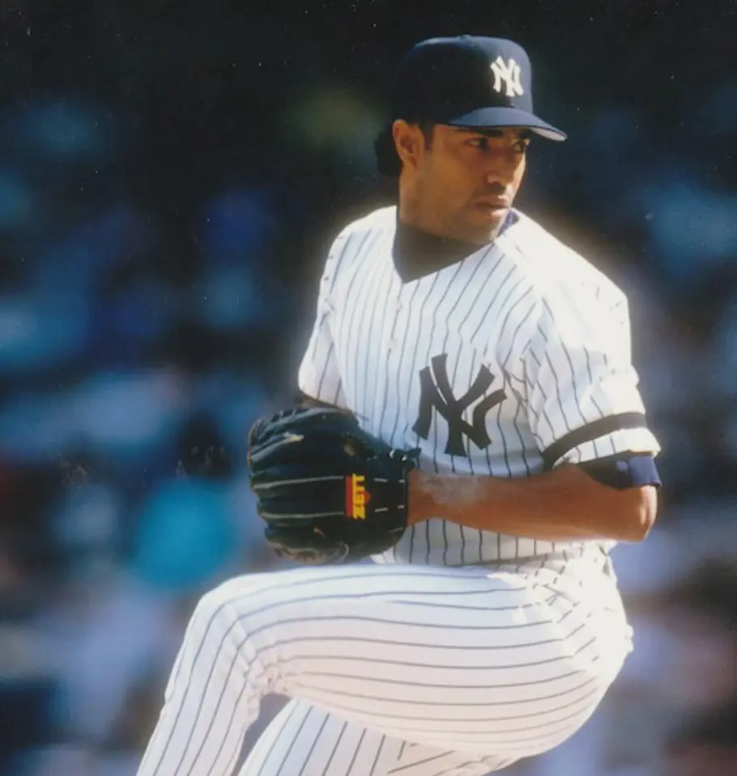

Ricky Bones
Career Highlights & Facts
(Facts are AI-generated and may require verification)
- Was a 1994 American League All-Star with the Milwaukee Brewers.
- Pitched for Puerto Rico in the 1988 Summer Olympics.
- Played for nine different MLB teams over an 11-season career.
Would you like to find out more about Ricky Bones?
Career Totals
| WAR | W | L | ERA | G | GS | SV | IP | SO | WHIP |
|---|---|---|---|---|---|---|---|---|---|
| 6.9 | 63 | 82 | 4.85 | 375 | 164 | 1 | 1278.1 | 564 | 1.475 |
Statistics via Baseball-Reference.com
The Original Clue